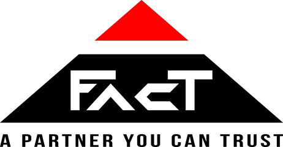

Vous ne savez pas d'où viennent vos clients
Le téléphone sonne, le devis part, le client signe. Mais il venait de quelle annonce ? De quel mot-clé ? D'aucune pub du tout ? Sans réponse, impossible de savoir ce qui est rentable.
En 2 heures, vous installez le même suivi que les grandes agences : GTM, GA4,
une automatisation Make, et vos devis signés qui remontent dans Google Ads.
Claude écrit le code, et Claude dans Chrome fait les manipulations à votre place.
Vous, vous validez.
pour tout installer, une seule fois
ligne de code à écrire vous-même
pour recevoir chaque demande avec sa source
Si vous vous reconnaissez dans une seule de ces situations, une partie de votre budget part chaque mois sur des clics qui ne signeront jamais.
Le téléphone sonne, le devis part, le client signe. Mais il venait de quelle annonce ? De quel mot-clé ? D'aucune pub du tout ? Sans réponse, impossible de savoir ce qui est rentable.
Google compte des clics sur un bouton, des visites de la page contact, parfois deux fois la même demande. Vous pilotez votre budget avec un chiffre qui ne correspond à aucun client réel.
Les enchères automatiques de Google apprennent de ce que vous leur envoyez. Sans données fiables, elles achètent les clics les moins chers, pas ceux qui deviennent des clients.
Si vous savez copier-coller et remplir un tableau, vous avez le niveau. Le reste, Claude s'en charge.
Plombiers, électriciens, menuisiers, couvreurs, paysagistes : sachez quelle annonce a fait signer le chantier.
Nettoyage, dépannage, déménagement, services à domicile : reliez chaque demande de devis à la campagne qui l'a amenée.
Une petite équipe, un budget Google Ads qui compte, et personne pour vérifier les chiffres. Un collaborateur reprend la main en 2 heures.
Consultants, formateurs, coachs, professions libérales : comptez les vrais rendez-vous demandés, pas des visites de page.
Claude, l'assistant IA d'Anthropic
Pour chaque script (capture du gclid, formulaire, export Google Ads), la formation vous donne le texte exact à coller dans Claude. Il écrit le code adapté à votre site, vous le copiez à l'endroit indiqué. Douze textes prêts à l'emploi.
L'extension Claude pour Chrome agit directement dans votre navigateur : elle ouvre GTM, crée la balise, remplit les champs, clique sur Enregistrer. Vous lui donnez la consigne fournie dans le module, vous la regardez faire, vous validez. Vous préférez tout faire vous-même ? Les captures d'écran sont là.
Claude est une marque d'Anthropic. Trackia est une formation indépendante.
Cinq maillons. Chacun est un module, chaque clic est montré en capture d'écran. À la fin, tout tourne seul.
Un seul petit code à poser sur votre site, une seule fois. Ensuite, tout se règle depuis l'interface de GTM, sans toucher au site.
GA4 branché proprement via GTM, sans doublons. Il compte les vraies demandes de devis, pas les clics sur un bouton.
Votre site mémorise d'où vient chaque visiteur dès la première page, et glisse ces informations dans le formulaire. Vous savez enfin quelle annonce a amené quel prospect.
Une ligne s'ajoute dans votre Google Sheets, un mail arrive dans Gmail avec le téléphone et la source.
Quand un devis est signé, vous l'indiquez dans votre tableau. Google Ads récupère la vente tout seul chaque jour, avec le gclid et le montant. L'algorithme cherche alors des clients comme ceux qui signent, pas des curieux.
7 modules en PDF, 2 heures en tout. Vous suivez les captures d'écran étape par étape, ou vous laissez Claude dans Chrome faire les manipulations pendant que vous vérifiez.
Les comptes à ouvrir, l'installation de Claude, et le réglage Google Ads qui rend tout le reste possible.
Créer le conteneur, le poser sur votre site (WordPress, Wix, Shopify, Webflow…), vérifier en mode aperçu.
Brancher GA4 via GTM, supprimer les doublons, définir la demande de devis comme événement clé.
Le cœur de la méthode. Claude écrit le script à partir du texte fourni, vous le collez dans GTM, vous vérifiez.
Le script repère tout seul l'envoi de votre formulaire, quel que soit l'outil : Contact Form 7, WPForms, Elementor, Gravity Forms, Wix, Webflow…
Le scénario qui écrit chaque demande dans votre tableau et vous alerte par mail, en moins d'une minute.
Créer la conversion, renvoyer automatiquement les devis signés avec gclid et montant, savoir quand changer vos enchères. En option : les conversions avancées. Le module qui fait baisser votre coût par client.
Le modèle Google Sheets de suivi, le script Trackia prêt à coller, l'export automatique vers Google Ads, et les 12 consignes prêtes à donner à Claude et à Claude dans Chrome.
Prêt à savoir quelle publicité vous rapporte des clients ?
Je reprends le contrôle : 397 €Accès immédiat, à vie. Paiement sécurisé par Stripe.
Ils utilisent déjà Trackia
Des entreprises comme la vôtre qui ont choisi de savoir enfin quelle publicité leur rapporte des clients.

Vous ne devriez pas dépendre d'une agence pour savoir ce que rapporte votre publicité. Trackia vous donne ma méthode, et les clés restent chez vous.
Rémi VinelFondateur de Trackia
C'est moins que ce que vous dépensez en quelques semaines sur des mots-clés que vous ne pouvez pas mesurer. Et bien moins qu'une installation faite par une agence.
397€
Accès immédiat, à vie, mises à jour comprises.
TVA non applicable, art. 293 B du CGI. Paiement sécurisé par Stripe. Vente réservée aux professionnels.
Oui, c'est précisément pour vous. Vous ne tapez pas une ligne de code. Quand un script est nécessaire, vous collez dans Claude un texte fourni mot pour mot, Claude écrit le script, vous le copiez à l'endroit indiqué.
Oui, c'est le cas le plus fréquent et il est traité en détail : installation par extension ou dans le thème, puis branchement sur Contact Form 7, WPForms, Gravity Forms ou Elementor. Wix, Squarespace, Shopify, Webflow et les sites sur mesure ont chacun leur variante.
Non. La formation part de zéro : création des comptes, puis chaque écran est montré tel que vous allez le voir. Et si vous préférez ne pas chercher les boutons, Claude dans Chrome fait les manipulations à votre place, directement dans votre navigateur.
Le gclid est un identifiant unique que Google Ads ajoute à l'adresse de votre site à chaque clic sur une annonce. Les UTM sont des étiquettes qui disent d'où vient un visiteur (Google, Facebook, newsletter…).
Les conserver jusqu'au formulaire, c'est savoir quelle annonce a amené quel client. Les renvoyer à Google Ads, c'est lui apprendre à en trouver d'autres.
GTM, GA4, Google Sheets et Gmail sont gratuits. Make propose une offre gratuite qui suffit à la plupart des artisans et TPE ; au-delà d'un certain volume de demandes, une offre payante devient nécessaire, et le module vous montre comment l'estimer avant de choisir.
Pour écrire les scripts, non : les consignes fournies fonctionnent avec la version gratuite de Claude.
L'extension Claude pour Chrome, qui fait les manipulations à votre place, demande un abonnement Claude payant. Elle n'est pas obligatoire : avec les captures d'écran, vous pouvez tout faire vous-même.
C'est ce qu'on vous a laissé croire. Concrètement, c'est une conversion à créer dans Google Ads, une feuille d'export dans votre tableau, et un import automatique que Google Ads lance chaque jour. Le module 06 le fait avec vous, écran par écran.
Un module montre comment brancher le mode consentement de Google sur votre bandeau de cookies, et ce que vous collectez exactement à chaque étape.
C'est une formation technique, pas un conseil juridique : pour votre politique de confidentialité, voyez avec votre conseil.
Le suivi, immédiatement : dès le module 05, chaque demande arrive dans votre tableau et votre boîte mail avec sa source.
L'effet sur Google Ads demande du volume : l'algorithme a besoin de plusieurs dizaines de ventes remontées pour bien apprendre. Le module 06 vous dit quoi faire selon votre volume réel.
Chaque module se termine par un point de contrôle : ce que vous devez voir à l'écran pour être sûr que l'étape est bonne, et quoi faire si vous voyez autre chose. Les pannes les plus fréquentes ont leur procédure de réparation.
Vous préférez être accompagné ? Une option d'assistance peut être ajoutée à la formation : vous êtes guidé pas à pas jusqu'à ce que votre suivi fonctionne.
Votre site, votre formulaire, votre cas particulier : posez votre question, réponse sous 24 h ouvrées.
Votre budget Google Ads continue de partir pendant que vous lisez cette page. Avec Trackia, vous saurez enfin où, et Google Ads aussi.
Je reprends le contrôle — 397 €Envie de comprendre le sujet avant de vous lancer ? Consultez notre guide pour apprendre Google Tag Manager : installation, suivi des conversions et gclid, expliqués pour les non-techniciens.